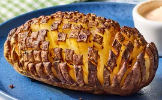

Ingredients
- 1 large russet potato
- 4 tablespoons butter
- Salt and pepper to taste
- 1/2 cup sour cream
- 1/2 cup shredded cheddar cheese
- 2 tablespoons fresh chives, chopped
Instructions
- Preheat oven to 400°F (200°C)
- Scrub potato and prick with fork
- Bake for 45-50 minutes until tender
- Cut potato in half and scoop out center
- Mix scooped potato with butter, sour cream, and cheese
- Stuff mixture back into potato halves
- Bake for additional 10 minutes until golden
- Garnish with chives and serve